CS 180 Project 4: Image Warping and Mosaicing
Part A: Image Warping and Mosaicing
A.1 Shooting the Pictures
I shot all three sets in Cupertino on October 21, 2026, using the iPhone 17 Pro’s 1× main camera (6.8 mm, 24 mm equivalent). I avoided the 0.5× ultrawide because of its barrel distortion. Each set is two portrait photos. Between the shots I kept the phone in one spot and turned it, so the center of projection stays fixed and the two photos are related by a homography.
- Set 1: the Visitor Center sign at 10600 N Tantau Avenue. The camera turned about 19° between shots, and the left photo covers 64% of the right one.
- Set 2: a path through olive trees next to a black louvered building. About 19° apart, 65% overlap.
- Set 3: a walkway between two apartment buildings. About 17° apart, 69% overlap.
In Sets 2 and 3 both photos have the same exposure. In Set 1 the exposure changed by about 20% between shots, which the blending in A.4 smooths over.
Set 1: Visitor Center sign
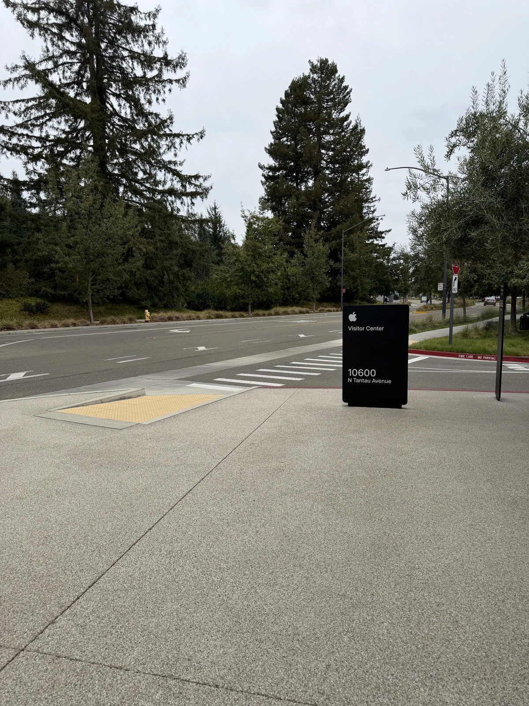
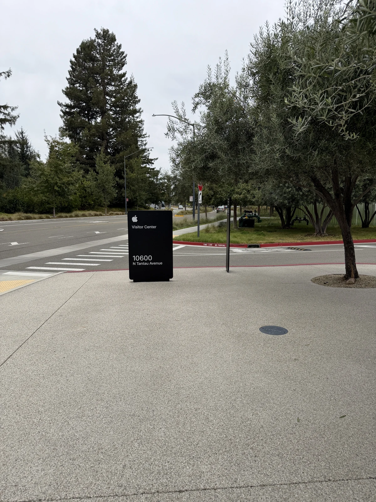
Set 2: Olive tree path
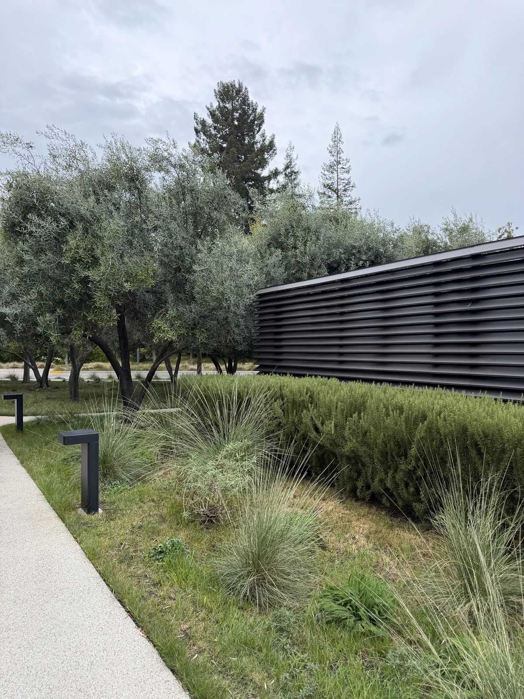
Set 3: Apartment walkway
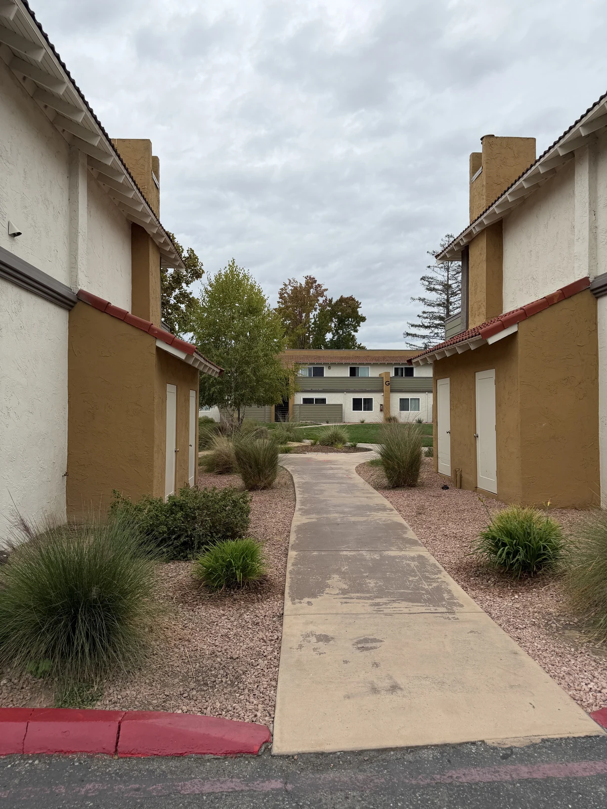
A.2 Recovering Homographies
A homography maps a point \((x, y)\) in one image to \((x', y')\) in another, up to scale:
\[ \begin{bmatrix} w x' \\ w y' \\ w \end{bmatrix} = \begin{bmatrix} a & b & c \\ d & e & f \\ g & h & 1 \end{bmatrix} \begin{bmatrix} x \\ y \\ 1 \end{bmatrix}. \]
Fixing the bottom-right entry to 1 leaves 8 unknowns. Dividing out \(w\) and multiplying through by the denominator gives two equations per correspondence that are linear in the unknowns:
\[ \begin{bmatrix} x & y & 1 & 0 & 0 & 0 & -x x' & -y x' \\ 0 & 0 & 0 & x & y & 1 & -x y' & -y y' \end{bmatrix} \mathbf h = \begin{bmatrix} x' \\ y' \end{bmatrix}, \qquad \mathbf h = (a, b, c, d, e, f, g, h)^\top. \]
Stacking \(n\) correspondences gives a \(2n \times 8\) system \(A\mathbf h = \mathbf b\). Four points determine \(H\) exactly, but small errors in the points move it a lot, so I use 15 correspondences per pair and solve the overdetermined system with least squares:
\[ \hat{\mathbf h} = \arg\min_{\mathbf h} \lVert A\mathbf h - \mathbf b \rVert^2 . \]
I clicked 15 corresponding point pairs for each set, spread over the top, middle and bottom of the overlap, then estimated each homography using least squares. Coordinates are pixels in the 1200 × 1600 images.
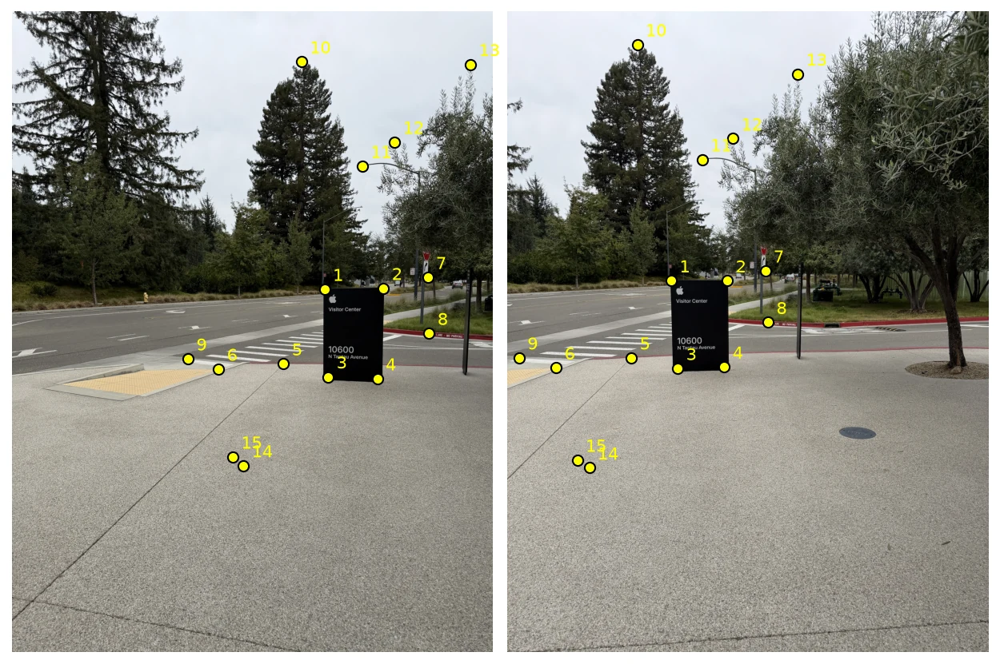
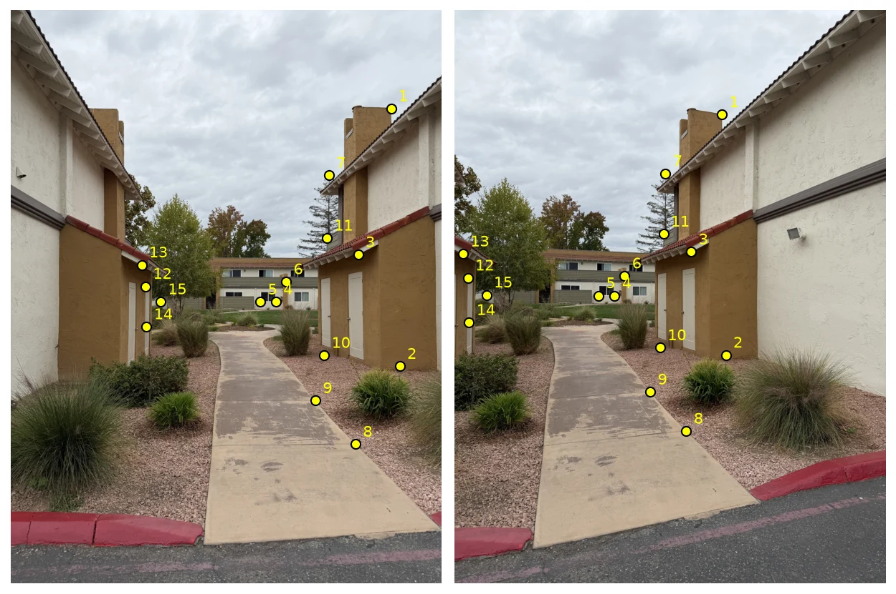
For Set 1, mapping the left photo into the right (reference) photo’s frame, the first correspondence \((779.17, 693.52) \to (408.11, 672.04)\), the sign’s top-left corner, gives the first two rows of the system:
\[ \begin{bmatrix} 779.17 & 693.52 & 1 & 0 & 0 & 0 & -317987.07 & -283032.45 \\ 0 & 0 & 0 & 779.17 & 693.52 & 1 & -523633.41 & -466073.18 \end{bmatrix} \mathbf h = \begin{bmatrix} 408.11 \\ 672.04 \end{bmatrix}. \]
All 15 correspondences give a \(30 \times 8\) system. Solving it gives
\[ H^{(1)}_{\text{left}\to\text{right}} = \begin{bmatrix} 1.5195 & 0.0606 & -683.89 \\ 0.2781 & 1.3733 & -267.93 \\ 4.060 \times 10^{-4} & 3.359 \times 10^{-5} & 1 \end{bmatrix}. \]
Sets 2 and 3 also use 15 correspondences each, a \(30 \times 8\) system, and give
\[ H^{(2)}_{\text{left}\to\text{right}} = \begin{bmatrix} 1.4675 & 0.0114 & -607.27 \\ 0.2970 & 1.3179 & -251.65 \\ 3.770 \times 10^{-4} & 1.331 \times 10^{-5} & 1 \end{bmatrix}, \quad H^{(3)}_{\text{left}\to\text{right}} = \begin{bmatrix} 1.4589 & 0.0014 & -504.99 \\ 0.2993 & 1.3310 & -271.69 \\ 3.682 \times 10^{-4} & 2.845 \times 10^{-5} & 1 \end{bmatrix}. \]
A.3 Warping the Images
I warp with inverse mapping. I first send the four image corners through \(H\) to find the output bounding box. Then, for every output pixel, I map its center back through \(H^{-1}\) and sample the input there, so the output has no holes. Pixel \((0, 0)\) is the center of the top-left pixel. Output pixels whose source falls outside the input get alpha 0.
- Nearest neighbor rounds the source location to the closest pixel.
- Bilinear blends the four surrounding pixels. With \(x_0 = \lfloor x \rfloor\), \(\alpha = x - x_0\) and likewise \(y_0\), \(\beta\):
\[ I(x, y) = (1-\alpha)(1-\beta)\, I_{x_0, y_0} + \alpha(1-\beta)\, I_{x_0+1, y_0} + (1-\alpha)\beta\, I_{x_0, y_0+1} + \alpha\beta\, I_{x_0+1, y_0+1}. \]
Rectification
To test the warp, I mark the four corners of an object I know is rectangular, in the order top-left, top-right, bottom-right, bottom-left, zooming in to place each to about a pixel. I map them to the corners of a rectangle with the object’s aspect ratio: 22 × 28 in for the poster frame and 8.5 × 11 in for the letter-size flyer. I don’t know the menu board’s size, so I estimated about 1.6 : 1 and checked that the lettering looks undistorted. Each rectified image is the whole photo warped into the plane of the object.
Rectification 1: poster frame
Rectification 2: flyer
Rectification 3: menu board
Nearest Neighbor vs. Bilinear
| Image | Output size | Nearest neighbor | Bilinear |
|---|---|---|---|
| Rectification 1: poster frame | 1543 × 2084 | 0.25 s | 0.45 s |
| Rectification 2: flyer | 2580 × 3386 | 0.65 s | 1.16 s |
| Rectification 3: menu board | 1856 × 2284 | 0.35 s | 0.75 s |
Bilinear takes about twice as long as nearest neighbor. It reads four source pixels per output pixel instead of one and blends them. Both are vectorized over the whole output, so even the 8.7-megapixel flyer result takes about a second.
The crops below come from the middle of each rectified object. Where the warp enlarges the photo, nearest neighbor repeats source pixels, so letters get stair-stepped edges and thin strokes change thickness from letter to letter. This is clearest on the flyer and the menu, which are stretched to about 1.5 to 1.7 times their size in the photo. Bilinear keeps edges smooth, at the cost of slightly softer text. On the poster frame, which is mostly shrunk, the difference is smaller but still shows as jagged poster borders. Bilinear’s extra cost is small next to the quality gain, so I use it for the mosaics.
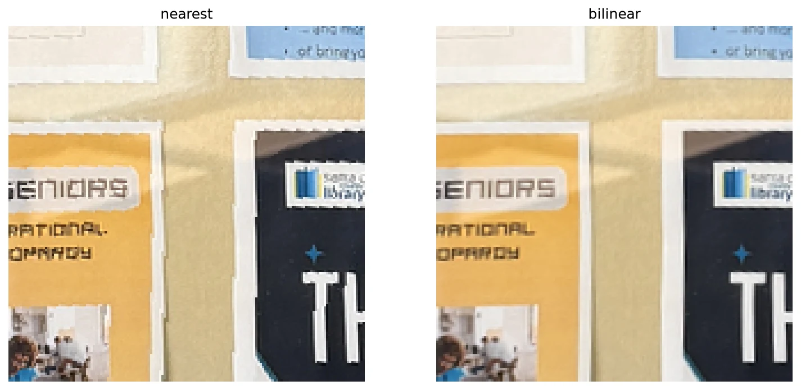
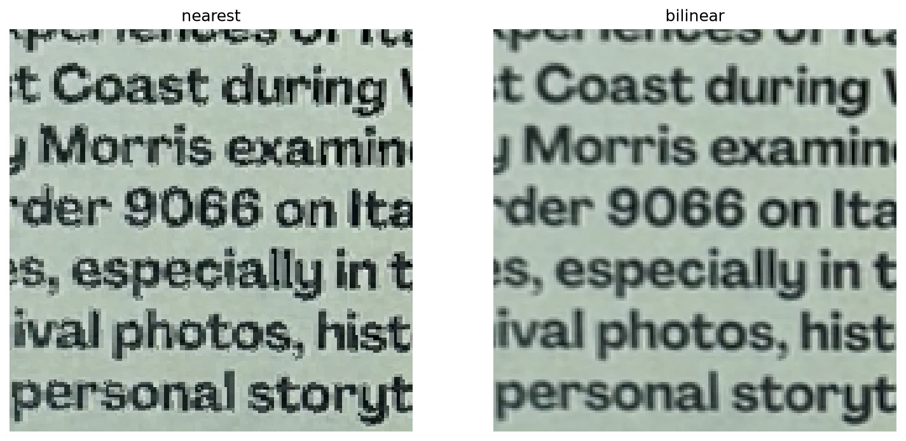
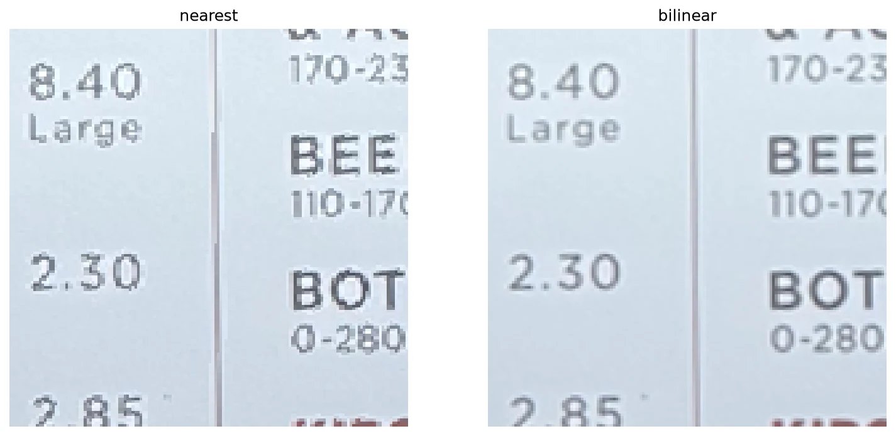
A.4 Blending into a Mosaic
The right photo of each set is the reference, and I warp the left photo into its frame. To place every image on one canvas, I send each image’s corners through its homography and take the bounding box of all of them. Every image is then inverse-warped onto that same box, so they all land in one frame.
Overwriting one image with the next leaves hard seams, so I blend instead. Each image gets a weight that is 1 at its center and falls linearly to 0 at its edges: the distance transform of the image’s footprint, normalized to a maximum of 1. The weight is warped along with the image.
A plain weighted average of the overlapping images doubles any edge that is a few pixels off, which happens wherever the homography fits less well, such as the curb near the camera at the bottom of Set 3. So I blend in two bands, a 2-level Laplacian pyramid:
- Low band: each warped image is blurred with a Gaussian (\(\sigma = 8\) px). These are combined with the weighted average \(\sum_i w_i I_i / \sum_i w_i\), so brightness differences fade smoothly across the overlap.
- High band: each image minus its blur. At each pixel it is taken from the single image with the largest weight, so edges are never doubled.
The mosaic is the sum of the two bands.
Set 1: Visitor Center sign
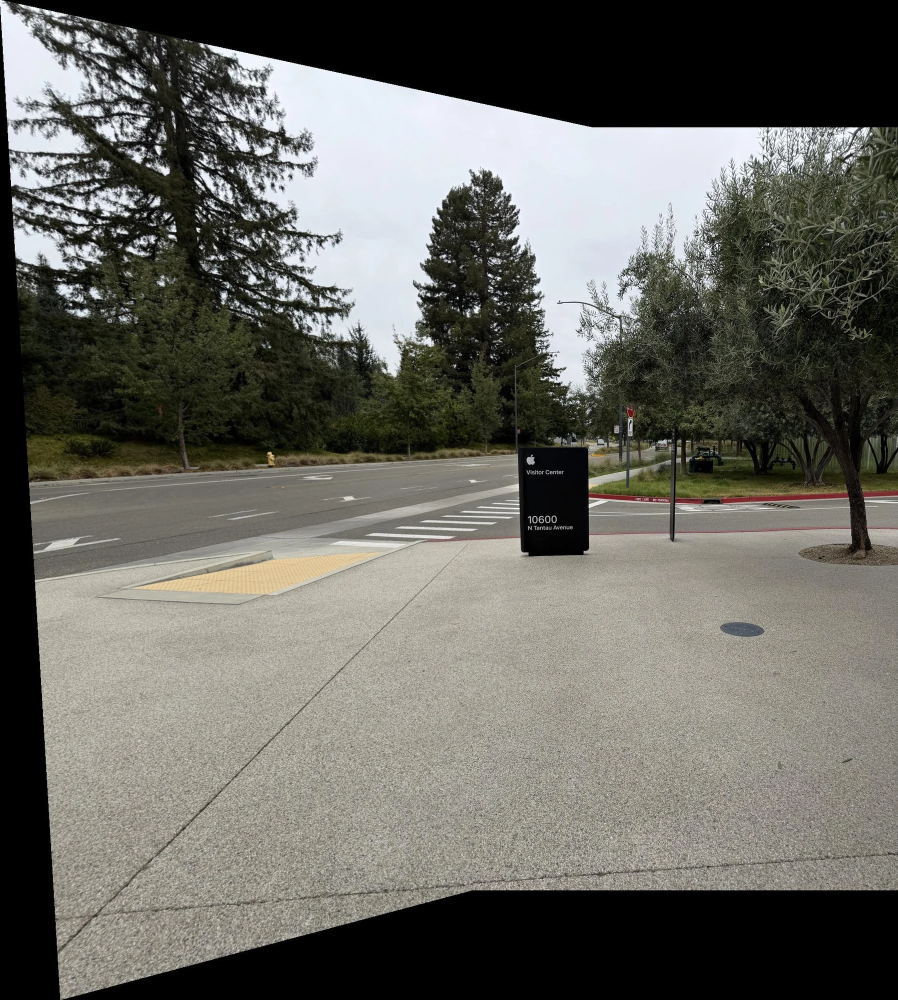
Set 2: Olive tree path
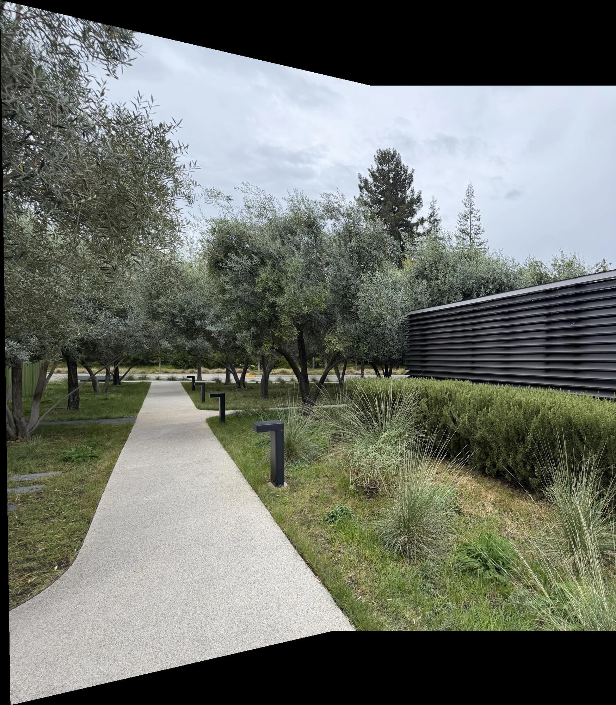
Set 3: Apartment walkway
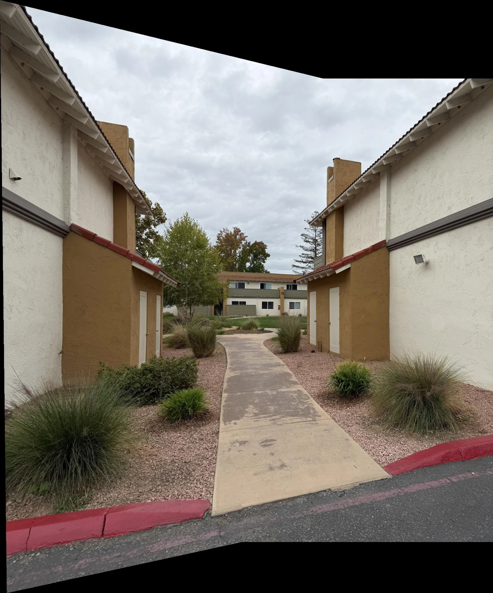
Part B
[TODO: Part B is due Tuesday, Nov 10, 2026.]